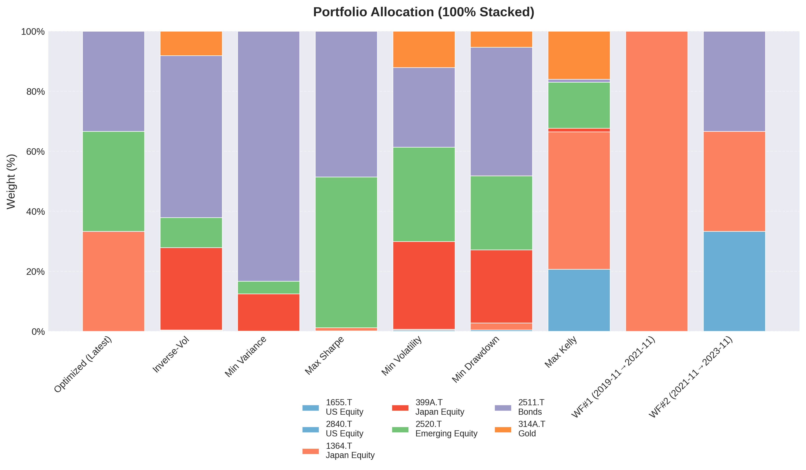
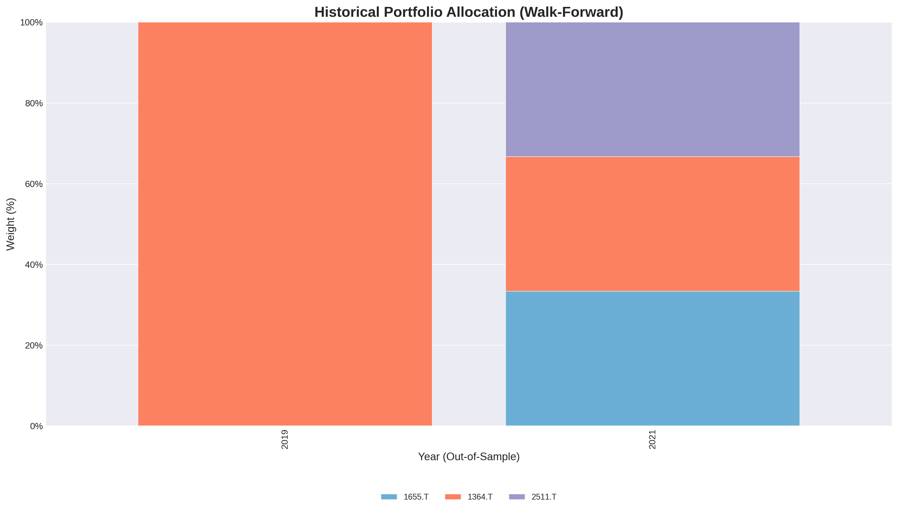
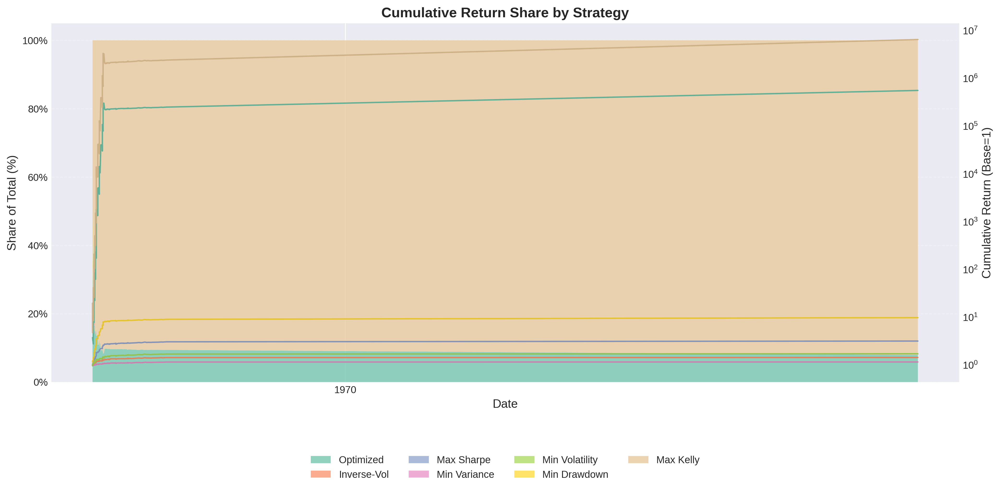
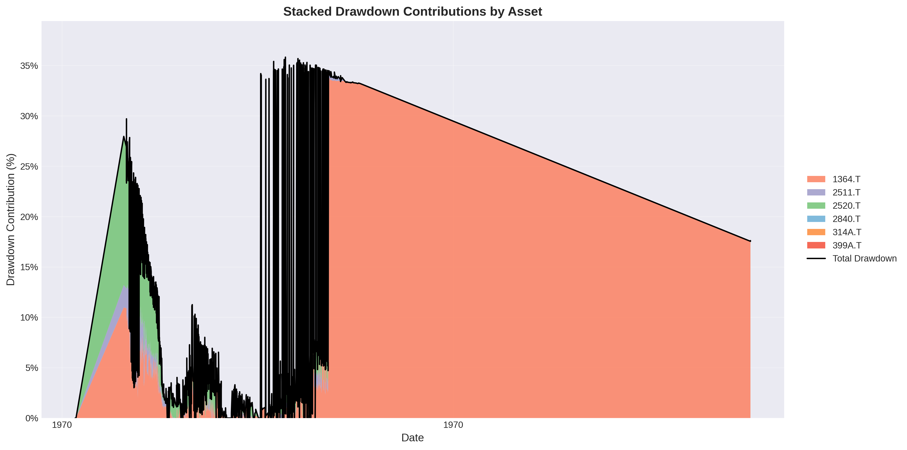
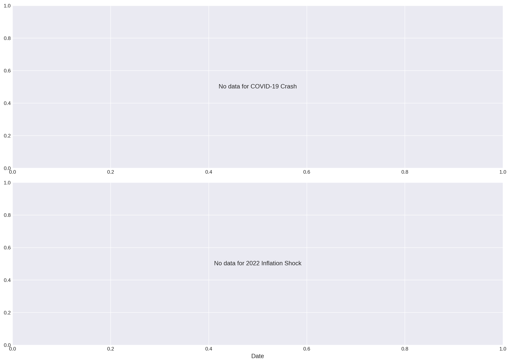
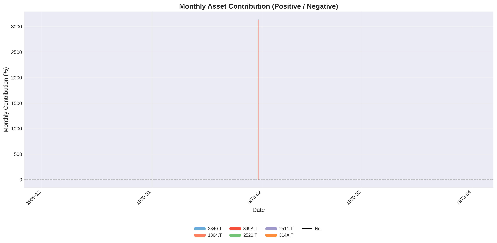
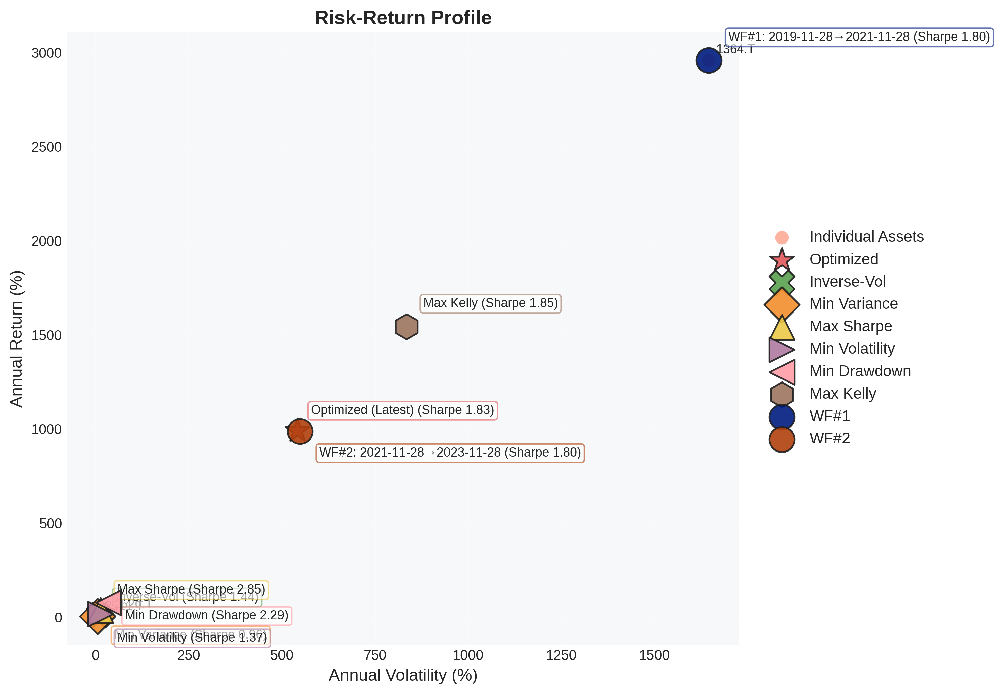
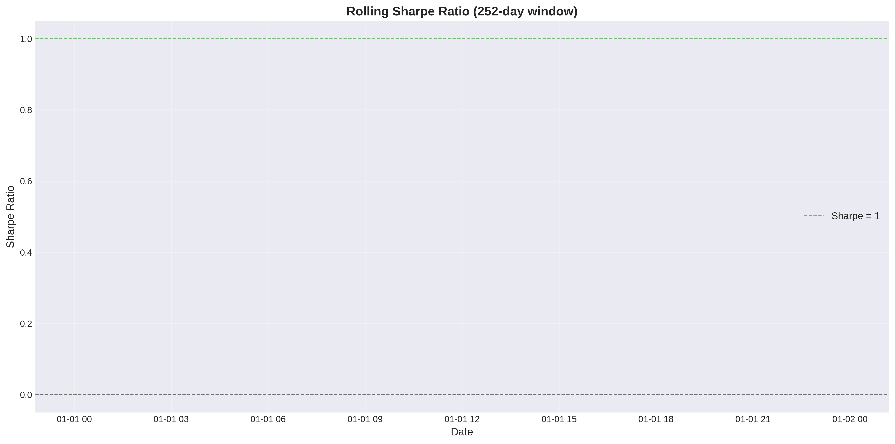
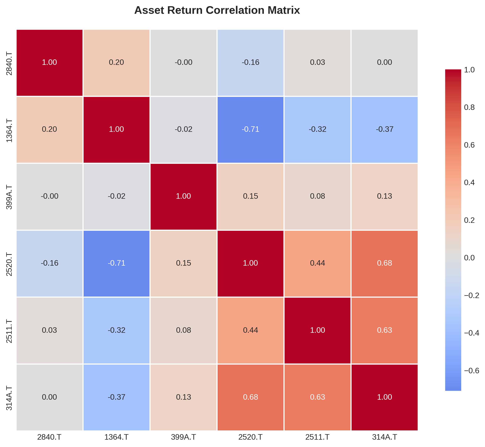

Index 7-Portfolio Optimization Report
Generated: 2025-12-24 16:37:49
代替ETF対応表
| 国内ETF | 代替指数 | オリジナル |
|---|---|---|
| 1655.T ｉＳ米国株 | S&P500指数 | ^GSPC |
| 2840.T ｉＦＥナ百無 | NASDAQ100 | ^NDX |
| 1364.T ｉシェア４百 | JPX日経400 | ^N225 |
| 314A.T ｉＳゴールド | LBMA Gold Price | GC=F |
| 2520.T 野村新興国株 | MSCIエマージング・マーケットIMI指数 | EEM |
| 2511.T 野村外国債券 | FTSE世界国債インデックス(除く日本) | TLT |
| 399A.T 上場高配５０ | 東証配当フォーカス100指数 | 1478.T |
初期投資額: ¥20,998,698（Max DD -20.63%バッファ込み、為替リスク排除、円建て運用）
Portfolio Allocation
| Ticker | Name | Category | Weight |
|---|---|---|---|
| 1364.T | ｉシェア４百 | equity | 33.33% |
| 2520.T | 野村新興国株 | equity | 33.33% |
| 2511.T | 野村外国債券 | bonds | 33.33% |
Risk Metrics
- Portfolio Value: ¥20,995,077
- Loan Amount: ¥10,000,000
- Current LTV: 47.63%
- LTV Limit: 60%
- Warning Ratio: 70%
- Liquidation Ratio: 85%
✅ HEALTHY: LTV within safe limits
トレーニング設定と検証概要
- 最適化サンプル数: 10,000
- 最適化目的関数ウェイト: sharpe 60%, volatility 40%
- 制約条件: min_weight=0.05, max_weight=0.30, max_volatility=0.15
- リバランス頻度（検証時）: 四半期（Q）
- 訓練期間 / テスト期間: 5年 / 2年（ローリング）
- 最適化ルックバック: 10y
- 最大ドローダウンバッファ: 20.63%
ウォークフォワード検証サマリー
- 評価期間数: 2
- 平均アウトオブサンプル Sharpe: 0.427 ± 0.018
- 平均年率リターン: 49.41%
- 平均最大ドローダウン: -30.63%
- Stability Score: 0.983
期間別ポートフォリオ構成（降順ウェイト）
| Period | 訓練期間 | テスト期間 | ウェイト構成 | Sharpe | Max DD |
|---|---|---|---|---|---|
| 1 | 2014-11-28〜2019-11-28 | 2019-11-28〜2021-11-28 | 1364.T 100.0% | 0.444 | -27.84% |
| 2 | 2014-11-28〜2021-11-28 | 2021-11-28〜2023-11-28 | 1655.T 33.3% 1364.T 33.3% 2511.T 33.3% |
0.409 | -33.42% |
Visualizations
Portfolio Allocation
100% stacked bar chart comparing asset weights across the optimized portfolio, reference strategies (Equal Weight, 60/40 Mix, Inverse-Vol, Min/Max variants), and walk-forward periods.

Historical Portfolio Allocation (Walk-Forward)
Evolution of portfolio weights over year-by-year out-of-sample periods.

Cumulative Returns Comparison
Stacked area view of strategy share (Optimized, Equal Weight, reference mixes) with cumulative return overlay.

Drawdown Evolution
Stacked drawdown contributions by asset category, with total drawdown overlay.

LTV Stress Tests
Loan-to-Value ratio during historical crisis periods (COVID-19, 2022 Inflation).

Asset Contribution to Returns
Monthly positive/negative contribution by asset relative to category-colored baseline.

Risk-Return Profile
Scatter plot comparing individual assets with multiple allocation strategies (Optimized, Equal Weight, 60/40 Mix, Inverse-Vol, Min Variance, Max Sharpe, Min Volatility, Min Drawdown, Max Kelly, Walk-Forward portfolios WF#1/WF#2).

Rolling Sharpe Ratio
252-day rolling Sharpe ratio showing risk-adjusted performance stability over time.

Asset Correlation Matrix
Correlation heatmap revealing diversification benefits between assets.
